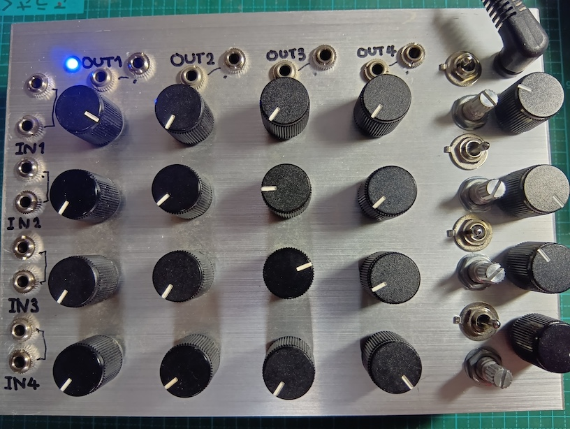
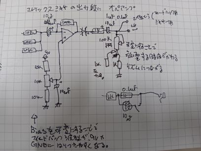

This is a 4x4 active matrix mixer. Each channel features two inputs and two outputs, with the outputs utilizing an inverting amplifier circuit. It operates on a single 9V power supply. To introduce complexity into the feedback loop, the bias of each output can be adjusted using a pot. The output coupling capacitors are switchable between 10µF and 0.1µF. Combined with an output pot, this effectively forms an adjustable high-pass filter.


Basic patch
Inputs are I1–I4, outputs are O1–O4. Start with every mixer knob at minimum.
Patch I1→O2 and I2→O1. Each output has two jacks, so use the spare one on O1 or O2 to feed an external monitor mixer.
This patch routes the signal through two inverting amplifier stages, so the loop returns in phase — the condition needed for oscillation. Slowly raise the I1-O2 and I2-O1 knobs together until it starts to oscillate. Call this system A.
Do the same with I3/I4/O3/O4 to start a second, independent oscillating loop — system B.
Cross-coupling and modulation
Raising any of the remaining knobs (e.g. I1→O4, I3→O2) couples system A and system B together, letting each loop's oscillation disturb the other's operating point. This produces more complex, less predictable oscillation than either loop running alone.
Bias voltage and high-pass filter threshold are independent per output channel — each of O1–O4 has its own. Instead of a single global control, this means system A and system B can be tuned with entirely different clipping character and cutoff frequency, then mixed only through the cross-coupling knobs.
Why an inverting amplifier
The output stage of a passive matrix mixer is just a resistor summing network. Taking that summing node through a single capacitor into an inverting amplifier keeps the mix stage simple. Compared to giving each channel its own coupling capacitor, this lets the signals interfere with each other more freely — which suits the goal here: chaos. Gain is set to 10x.
Because the summing happens at a real (non-virtual-ground) node before the op-amp stage, each channel's source impedance loads the others directly — unlike a textbook summing amplifier, where per-channel resistors meet at a low-impedance virtual ground and stay largely independent.
Why the bias is made variable
The bias voltage is deliberately skewed off-center. This pushes the waveform into asymmetric clipping between the positive and negative sides, aiming for intermittent oscillation behavior similar to blocking oscillation. The schematic shows a 10µF capacitor in parallel with the bias point, but the actual build uses a much smaller value — this makes the circuit less stable, which is the point.